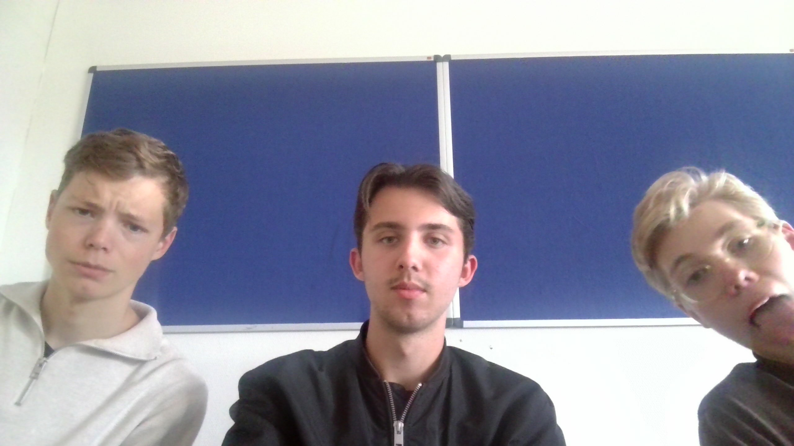

Musikproduktion
Musikproduktion har inte alltid varit med mig, men under det senaste året har mitt intresse verkligen vuxit.
Att skapa musik utifrån tankar och idéer väcker min kreativitet och gör att jag kan uttrycka mig på nya sätt.
Genom musiken får jag möjlighet att utvecklas, både tekniskt och konstnärligt, samtidigt som jag skapar nya kontakter
med människor i industrin, både genom kulturskolan och olika nätverk online. I dagens digitala värld sker det mesta av kommunikationen
på nätet, vilket gör det enkelt att samarbeta med andra utan att behöva resa långt för en session.
Musik handlar inte bara om att skapa ljud, det är mycket mer än så.
Det är tankar och känslor som vävs samman till något större genom skapande och framförande av ideer.
Varje låt är som ett pussel av känslor, inspiration och teknik, och det är just den processen som fascinerar mig mest.
Tack vare dagens teknik har det blivit enklare någonsin att förvandla ideer till verklighet.
Jag använder till exempel musikprogrammet FL Studio, som tidigare hette Fruity Loops.
Med hjälp av avancerade verktyg och digitala lösningar kan jag skapa musik i en professionell miljö direkt hemifrån.
Teknikens utveckling har verkligen öppnat dörrar för nya kreativa möjligheter, och det är precis där jag befinner mig idag.

Här har vi tre killar från Teknik SPETS-klassen som är väldigt intresserade av musik,
men fokus idag är på mig eftersom detta är min egna hemsida. Fortsätt till Framtid för att läsa mer!